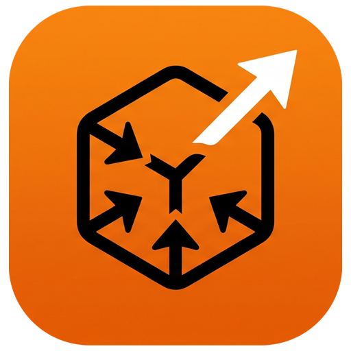

A modern, cross-platform graphical user interface for Telepresence, built with Wails.
Connect to your Kubernetes clusters with a rich UI for configuring core settings, network routing, and advanced daemon settings.
Quickly intercept workloads to route traffic to your local environment with advanced routing and Docker container configurations.
Runs quietly in the background with a native system tray icon for quick connect/disconnect access without opening the full window.